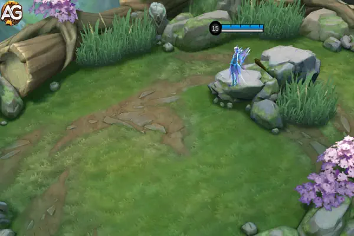
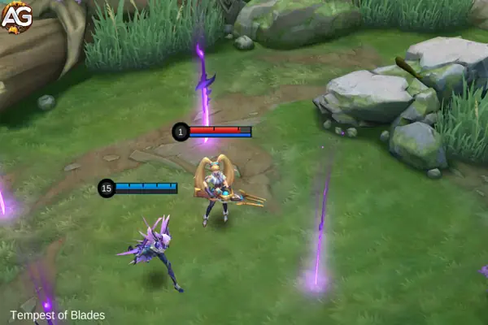
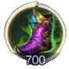
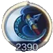
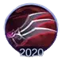
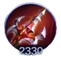
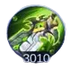
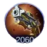
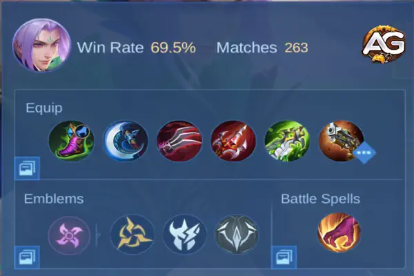

Introdução ao Ling
Ling é um assassino excepcional conhecido por sua mobilidade única e capacidade de atravessar paredes, tornando-o uma força formidável no jogo. No entanto, dominar Ling requer um entendimento profundo de suas habilidades e mecânicas.
Por que Ling?
- Alta Mobilidade: Ling pode pular entre paredes, permitindo fugas rápidas e ataques surpresa.
- Alto Dano Explosivo: Ling pode derrubar rapidamente alvos frágeis, tornando-se uma ameaça para as linhas de fundo inimigas.
- Invulnerabilidade: Sua habilidade suprema proporciona invencibilidade e controle de multidões, mudando o rumo das lutas em equipe.
Habilidades e Passiva do Ling
Passiva: Andarilho das Nuvens
Descrição:
- A Habilidade de Leveza de Ling permite que ele salte entre paredes, ganhando 4 Pontos de Leveza por segundo em uma parede e 5 pontos ao causar dano.
- Ling ganha 1,6 vezes a Chance de Crítico de todas as fontes, mas tem um limite de 150% de Dano Crítico.
Análise:
A passiva de Ling é vital para o gerenciamento de energia e aprimoramento de sua capacidade de ataque crítico. Seus Pontos de Leveza (energia) regeneram mais rápido nas paredes e através dos ataques. A Chance de Crítico aumentada torna itens baseados em crítico altamente eficazes nele.

Habilidade 1: Postura da Andorinha
Tipo: Mobilidade, Buff
Tempo de Recarga: 20s
Custo de Energia: 30
Efeito Passivo: A Chance de Crítico de Ling é aumentada em 2,5%.
Efeito Ativo: Ling salta para uma parede designada, entrando em um estado de semi-furtividade, restaurando Pontos de Leveza mais rápido e ganhando 30% de Velocidade de Movimento. Se for danificado ou controlado, ele sai da furtividade e cai, ficando 30% mais lento por 2 segundos.
Análise:
A primeira habilidade de Ling é sua principal ferramenta de mobilidade, permitindo que ele pule entre paredes e permaneça ilusório. O estado de semi-furtividade oferece uma vantagem tática, tornando mais difícil para os inimigos o acertarem. Esteja sempre atento às habilidades de controle de multidão dos inimigos que podem forçá-lo a sair das paredes.
Habilidade 2: Espada Desafiadora
Tipo: Dano, Mobilidade
Tempo de Recarga: 2,5s
Custo de Energia: 35
Efeito: Ling avança na direção alvo, apunhalando inimigos próximos e causando 300 (+50% do Ataque Físico Total) de Dano Físico. Quando usado a partir de uma parede, não custa energia, desacelera os inimigos em 30% por 1,5 segundos e causa o mesmo dano.
Análise:
Espada Desafiadora é a principal fonte de dano e mobilidade de Ling. Pode ser usado frequentemente devido ao seu curto tempo de recarga, tornando-se essencial tanto para engajar quanto para escapar. Sua dupla funcionalidade (chão e parede) oferece flexibilidade em cenários de combate.
Suprema: Tempestade das Lâminas
Tipo: Explosão, CC
Tempo de Recarga: 52s
Efeito: Ling salta no ar, tornando-se invencível e ganhando 10% de Velocidade de Movimento extra por 1,5 segundos. Ao pousar, ele causa 250 (+100% do Ataque Físico Total) de Dano Físico, derruba inimigos no centro por 1 segundo e cria um Campo de Espadas por 8 segundos. Tocar nas espadas reduz o tempo de recarga da Postura da Andorinha em 4s, reinicia o tempo de recarga da Espada Desafiadora e concede 25 Pontos de Leveza.
Análise:
A suprema de Ling é uma virada de jogo nas lutas em equipe. Proporciona invulnerabilidade, controle de multidões e reinicia suas habilidades de mobilidade. Dominar a colocação e o tempo da suprema pode mudar o rumo das batalhas, permitindo combos devastadores e eliminações rápidas.

Combos e Técnicas do Ling
Combos Básicos
Primeiro Combo / Mergulho em Torre:
Habilidade 2 (Espada Desafiadora) + Ataque Básico + Suprema (Tempestade das Lâminas) + Habilidade 1 (Postura da Andorinha) para escapar.
Use este combo para mergulhar rapidamente sob torres e garantir abates.
Segundo Combo:
Habilidade 2 (Espada Desafiadora) + Ataque Básico + Habilidade 1 (Postura da Andorinha) + Ataque Básico + Habilidade 2 (Espada Desafiadora) + Suprema (Tempestade das Lâminas).
Este combo maximiza o dano e a mobilidade, ideal para engajar e desengajar nas lutas.
Dicas para Usar os Combos do Ling
- Uso das Paredes: Posicione-se sempre nas paredes para maximizar a regeneração de energia e mobilidade.
- Gerenciamento de Energia: Fique de olho nos seus Pontos de Leveza. O uso eficiente da Postura da Andorinha e da Espada Desafiadora garante que você sempre tenha energia para escapar ou perseguir.
- Tempo da Suprema: Use a Tempestade das Lâminas para iniciar lutas em equipe ou escapar quando estiver em perigo. A invulnerabilidade é crucial para esquivar de habilidades mortais.
- Controle de Visão: Use a Postura da Andorinha para explorar arbustos e evitar emboscadas. A furtividade de Ling nas paredes pode fornecer informações valiosas sobre os movimentos inimigos.
Melhores Builds para Ling em MLBB
Build Recomendada
-

Bota Mágica
Estatísticas: +40 Velocidade de Movimento, +18 Defesa Mágica.
Passiva: Reduz a duração de controle de multidão em 30%.Análise: Estas botas fornecem a sobrevivência essencial para Ling, reduzindo a duração dos efeitos de controle de multidão. Isso é crucial para manter a mobilidade e escapar de situações complicadas. A defesa mágica adicional ajuda contra inimigos magos, e o aumento na velocidade de movimento melhora sua já alta mobilidade.
-

Furia do Guerreiro Selvagem
Estatísticas: +65 Ataque Físico, +25% de Chance de Crítico.
Passiva: Golpes críticos concedem 5% de Ataque Físico extra por 2 segundos.Análise: Este item aumenta significativamente o dano de Ling, aumentando sua chance de crítico e fornecendo ataque físico adicional. O efeito passivo amplifica ainda mais seu dano, tornando seus golpes críticos ainda mais devastadores. Este item é uma parte essencial da build de dano explosivo de Ling.
-

Garras de Hass
Estatísticas: +30 Ataque Físico, +15% Velocidade de Ataque, +20% de Chance de Crítico.
Passiva: Golpes críticos concedem 20% de Velocidade de Ataque por 2 segundos.Análise: Garras de Hass fornecem roubo de vida e aumentam a sobrevivência de Ling em lutas prolongadas. A velocidade de ataque adicional dos golpes críticos torna os ataques de Ling mais rápidos e frequentes, permitindo um dano contínuo e melhor eficiência no roubo de vida.
-

Confronto Sem Fim
Estatísticas: +60 Ataque Físico, +250 HP, +10% Redução de Recarga, +8% Roubo de Vida Híbrido, +5% Velocidade de Movimento, +5 Regen de Mana.
Passiva: Após lançar uma habilidade, o próximo Ataque Básico causa Dano Verdadeiro extra.Análise: Confronto Sem Fim melhora o desempenho geral de Ling, fornecendo uma mistura de ataque, sobrevivência e utilidade. A redução de recarga permite que Ling use suas habilidades com mais frequência, enquanto a passiva adiciona um dano explosivo significativo aos seus ataques. O roubo de vida híbrido também garante que ele possa se sustentar durante as lutas.
-

Lâmina do Desespero
Estatísticas: +160 Ataque Físico, +5% Velocidade de Movimento.
Passiva: Aumenta o Ataque Físico em 25% por 2 segundos ao causar dano a inimigos com menos de 50% de HP.Análise: Lâmina do Desespero é um item chave para maximizar o dano explosivo de Ling. O alto aumento no ataque físico aumenta significativamente seu dano, e o efeito passivo permite que Ling finalize inimigos com pouca vida rapidamente. O bônus de velocidade de movimento também complementa seu estilo de jogo de alta mobilidade.
-

Rugido Maléfico
Estatísticas: +60 Ataque Físico.
Passiva: Ganha penetração física extra com base na Defesa Física do inimigo.Análise: Rugido Maléfico fornece a penetração física necessária para lidar com inimigos mais resistentes. Este item garante que os ataques de Ling penetrem as defesas inimigas, tornando seu dano mais eficaz contra alvos com alta defesa. É especialmente útil no final do jogo quando os inimigos constroem mais itens defensivos.

Melhores Emblemas e Talentos para Ling
- Conjunto de Emblemas: Emblema de Assassino.
- Talentos Principais:
- Fatal: Aumenta a Chance de Crítico.
- Caçador Experiente: Aumenta a Velocidade de Caçador.
- Espirito de Luta: Aumenta o dano do ataque básico de Ling.
Jogando com Ling em Diferentes Fases
Início de Jogo
- Foco em Farmar: Garanta os campos da selva e alcance o nível quatro o mais rápido possível.
- Controle do Buff Azul: Certifique-se de obter o buff azul para regeneração de energia.
- Primeiro Gank: Mire na rota do ouro para abates iniciais e pressão.
Meio de Jogo
- Prioridade de Alvos: Mire nos Magos e Atiradores inimigos para enfraquecer seu dano.
- Controle de Objetivos: Garanta a tartaruga e mantenha o controle do buff azul.
- Andar pelo Mapa: Use sua mobilidade para ajudar nas rotas e garantir abates.
Final de Jogo
- Lutas em Equipe: Posicione-se bem e espere os inimigos usarem suas habilidades de atordoamento antes de engajar.
- Controle do Lorde: Ajude sua equipe a garantir o Lorde para um empurrão decisivo.
- Dividir Empurrão: Use sua mobilidade para aplicar pressão em várias rotas.
Counterando Ling
Heróis Counter
- Kufra: Seu controle de multidão pode derrubar Ling das paredes e interromper sua mobilidade.
- Ruby: Suas habilidades de controle tornam difícil para Ling permanecer nas paredes e engajar de forma eficaz.
- Eudora: O dano explosivo e os atordoamentos de Eudora podem eliminar Ling rapidamente.
Itens Counter
- Vento da Natureza: Fornece imunidade ao Dano Físico por uma curta duração.
- Imortalidade: Concede uma segunda chance de vida, dando tempo para contra-atacar ou escapar.
Conclusão
Dominar Ling requer prática, paciência e um profundo entendimento de suas habilidades e mecânicas. Utilize sua mobilidade para criar jogadas imprevisíveis e aproveitar as oportunidades de eliminar alvos prioritários. Com as builds e estratégias certas, você pode transformar Ling em uma máquina de eliminar inimigos, dominando o campo de batalha em Mobile Legends: Bang Bang.
 Guia do Harith MLBB
Guia do Harith MLBB Guia de Gusion MLBB
Guia de Gusion MLBB Guia de Karina MLBB
Guia de Karina MLBB